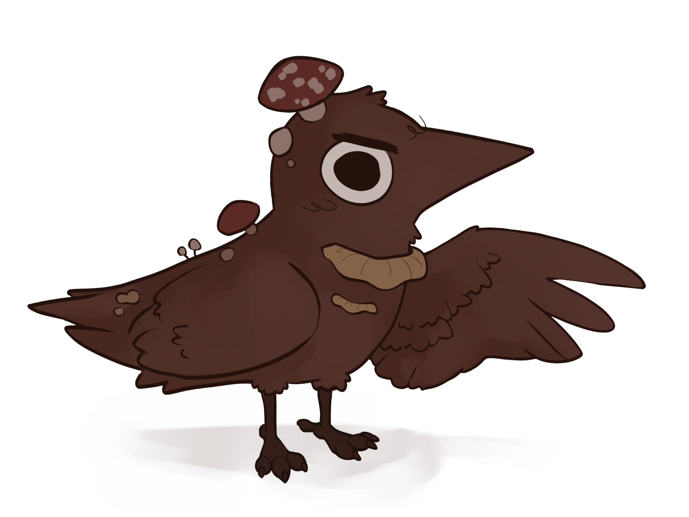

ABOUT ME
Mónica Cases, also known as fungi_crow on social media, is a junior concept artist studying Fine Arts at the Polytechnic University of Valencia (Spain). Fascinated by the world of animation and video games, Mónica's passion lies in creating unique and fun designs that communicate compelling stories.
Recent projects include designs for the demo of Échame una pata, En la misma onda, and background work for the student short film Yungay.
monicasesiranzo@gmail.com


monicasesiranzo@gmail.com
© Copyright 2024 Mónica Cases Iranzo - All rights reserved
Website programmed by Pau Ayllón Ortolá